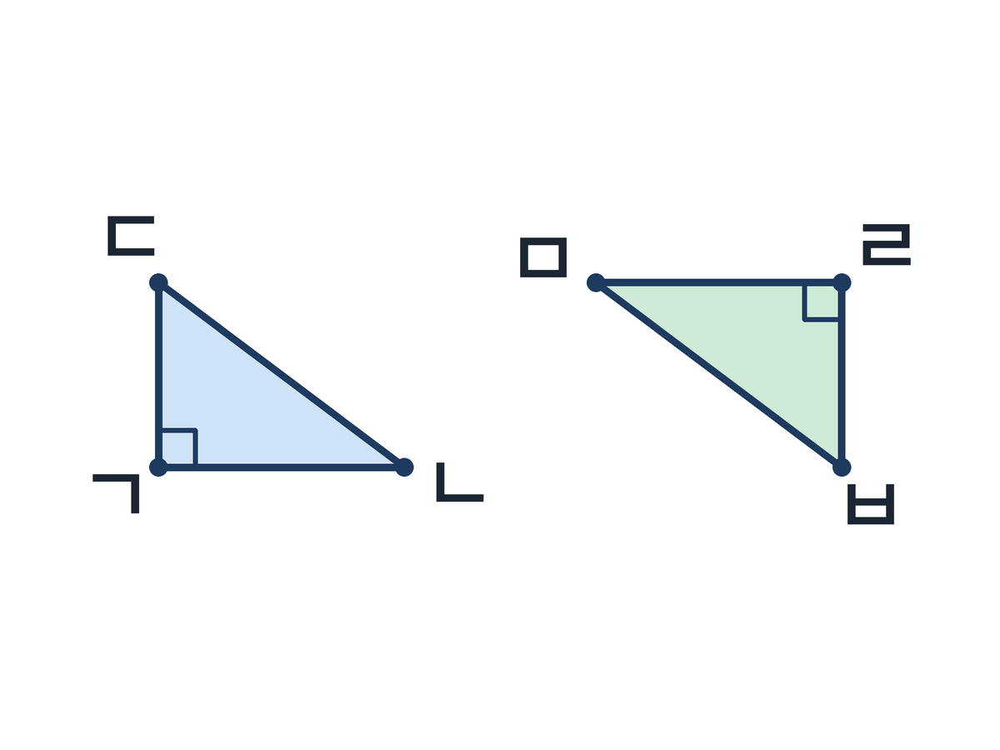
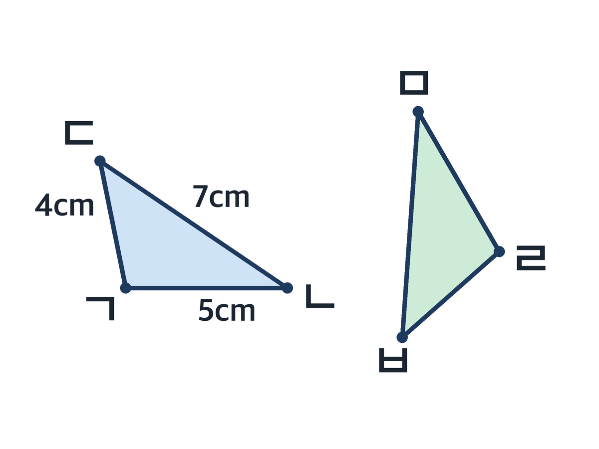
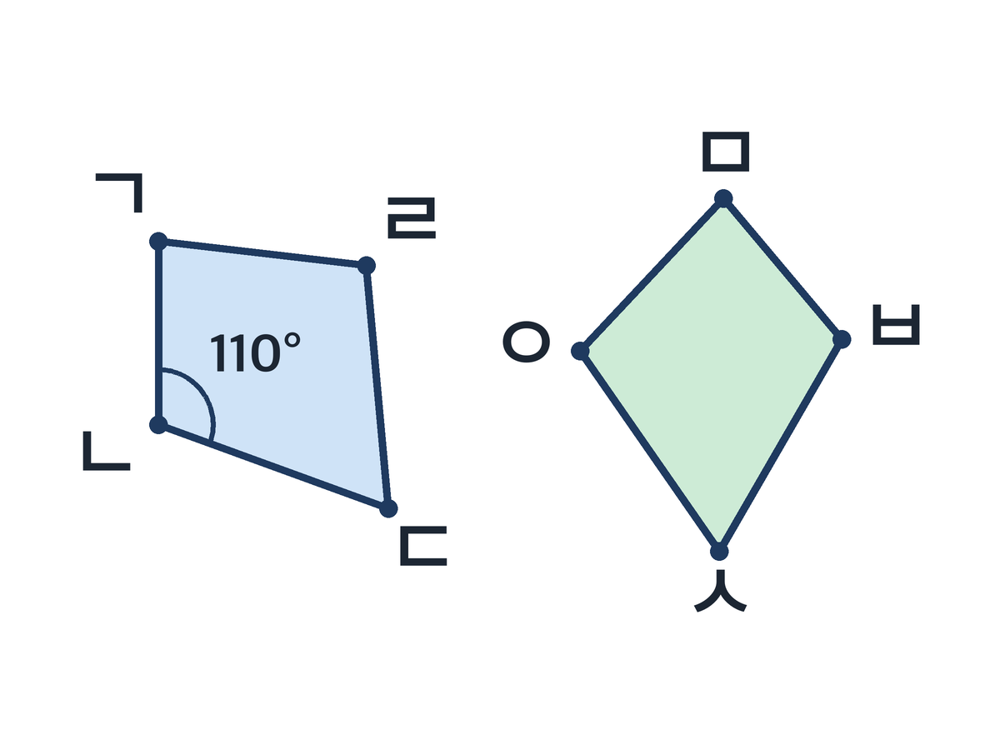
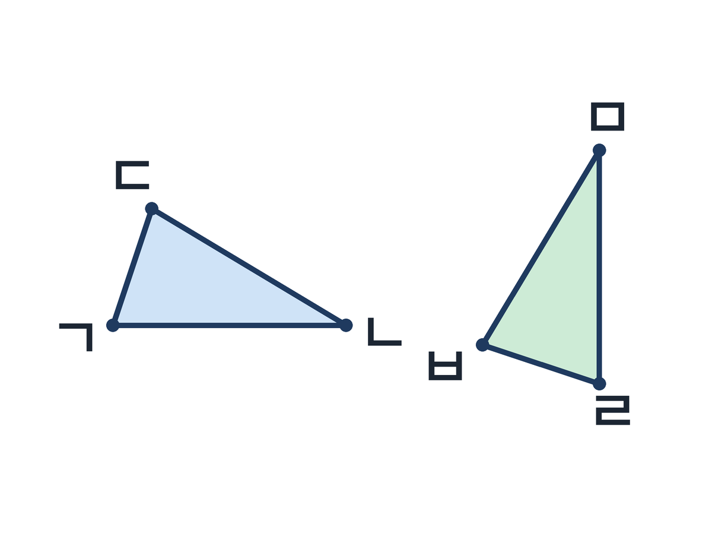

2편 · AI 오류 진단 — 합동인 도형의 성질, 틀린 설명을 고쳐라
비상 수학 5-2 3단원 합동과 대칭 · 합동인 도형의 성질 · 40분 · 2026-10-22 게시
학습 목표
- 합동인 두 도형에서 대응점·대응변·대응각을 찾아 기호로 나타낼 수 있다.
- 합동인 도형의 성질(대응변의 길이가 서로 같고, 대응각의 크기가 서로 같다)을 근거로 틀린 설명을 찾아 고치고, 그 까닭을 교과서 용어로 쓸 수 있다.
설계 의도
합동의 성질은 "대응변의 길이와 대응각의 크기가 같다"는 한 문장으로 끝나 보이지만, 아이들이 실제로 막히는 곳은 대응점을 바르게 짝짓는 일입니다. 도형을 돌리거나 뒤집어 놓으면 '포개면 겹치는 자리'가 아니라 '글자 순서'로 짝을 지어 변 ㄱㄴ의 대응변을 변 ㅁㅂ이라고 씁니다.
그래서 이 수업은 성질을 외우게 하지 않고, AI가 쓴 것처럼 꾸민 틀린 설명 8장을 진단하고 고치게 합니다. 틀린 설명을 고치려면 대응점을 짚고, 성질을 근거로 대고, 교과서 용어로 다시 써야 합니다. 1편에서 AI는 문제를 만들어 주는 상대였고, 2편에서 AI는 틀릴 수 있는 상대입니다.
카드 8장은 꾸러미에 들어 있고 교사가 미리 인쇄하므로 학생은 AI 계정이 필요 없고 개인정보도 수집하지 않습니다. 글 카드는 제미나이로 더 만들 수 있지만, 그림이 들어간 카드는 코드로 정확히 그렸습니다. AI 이미지 생성은 도형의 길이와 각이 부정확해 수학 자료로 쓸 수 없다는 것을 1편 제작에서 확인했습니다.
40분 흐름
| 분 | 단계 | 교사 | 학생 | 자료 |
|---|---|---|---|---|
| 0~5 | 도입 'AI 설명, 믿어도 될까?' | AI가 쓴 설명 한 장("합동이면 대응각의 크기는 같지만 대응변의 길이는 다를 수 있습니다")을 띄우고 "맞을까?" ○× 투표. 정답은 말하지 않고 "확인하려면 무엇을 알아야 할까?"로 넘김 | 손들기 투표, 이유 한 마디 | 덱 |
| 5~15 | 개념 AIDT 대응 요소 찾기 | 합동인 두 도형을 포개어 겹치는 점·변·각을 찾고 대응점·대응변·대응각으로 명명. 자·각도기 도구로 대응변 길이, 대응각 크기 재서 '같다'는 성질 정리 | 태블릿에서 포개기·재기, 성질 발견 | 비상 AIDT, 덱 |
| 15~35 | 활동 AI 오류 진단 (모둠) | 오류 카드 8장. 1단계 카드를 읽고 틀린 곳에 빨간 밑줄(그림 카드는 대응점을 먼저 짚기), 2단계 뒷면에 '왜 틀렸는지 + 바르게 고친 문장'을 교과서 용어로 쓰기, 3단계 모둠별 '가장 그럴듯했던 함정 카드' 1장 발표 → 정답 공개 | 모둠 토의, 밑줄, 고쳐 쓰기, 발표 | 활동지, 색연필 |
| 35~40 | 정리 AIDT 평가 + 한 줄 | AIDT 형성평가 2~3문항. "합동인 두 도형은 대응변의 ___가 서로 같고, 대응각의 ___가 서로 같다" 빈칸 채우기. 도입 카드로 돌아가 "이제 고칠 수 있지?" | 개별 평가, 한 줄 정리 | AIDT, 덱 |
내려받기
- 수업 덱 (PPTX)12장 · 고쳐 쓰기용
- 수업 덱 (PDF)12장 · 바로 띄우기용
- 활동지 (PDF)A4 앞뒤 · 모둠당 1장
- 교사용 흐름 (PDF)흐름표 · 정답표 · 프롬프트
오류 카드 8장
① 성질(변)
두 삼각형이 서로 합동이면 대응각의 크기는 서로 같습니다. 하지만 대응변의 길이는 다를 수 있습니다.
② 대응점 짝
두 삼각형은 서로 합동입니다. 점 ㄱ의 대응점은 점 ㅁ, 점 ㄴ의 대응점은 점 ㄹ입니다.
③ 개수
합동인 두 사각형에는 대응변이 3쌍, 대응각이 4쌍 있습니다.
④ 길이
변 ㄱㄴ의 대응변은 변 ㅁㅂ입니다. 그러므로 변 ㅁㅂ의 길이는 5cm입니다.
⑤ 각
각 ㄱㄴㄷ의 대응각은 각 ㅁㅂㅅ입니다. 합동이면 대응각의 크기를 더해 180°가 되므로 각 ㅁㅂㅅ의 크기는 70°입니다.
⑥ 뒤집기
도형을 뒤집어 놓으면 포개지더라도 대응점을 찾을 수 없습니다. 그래서 뒤집은 도형에는 합동의 성질을 쓸 수 없습니다.
⑦ 둘레(부분 오류)
합동인 두 삼각형은 대응변의 길이가 서로 같으므로 둘레도 같습니다. 그래서 삼각형 ㄱㄴㄷ의 둘레가 16cm이면 삼각형 ㄹㅁㅂ의 둘레는 그 2배인 32cm입니다.
⑧ 대응점 수
점 ㄱ의 대응점은 점 ㄹ과 점 ㅁ 두 개입니다. 대응점은 여러 개일 수 있습니다.
정답과 바르게 고친 설명은 교사용 PDF에 있습니다.
프롬프트 카드 (교사용 · 제미나이 글 카드 추가 생성)
글 카드 추가 생성
초등학교 5학년 수학 '합동인 도형의 성질'(대응점·대응변·대응각, 대응변의 길이와 대응각의 크기가 같다)에서 학생들이 자주 하는 오개념을 담아, 그럴듯하지만 틀린 설명 문장 5개를 존댓말로 써 줘. 각 설명은 두 문장 이내로 쓰고, 대응점·대응변·대응각 중 한 용어 이상을 넣어 줘. 설명마다 '어디가 틀렸는지'와 '바르게 고친 문장'을 교사용 정답으로 따로 적어 줘. 그림은 넣지 마.
생성 결과 중 실제로 맞는 문장이 섞여 나오면 버리지 말고 '보너스 맞는 카드'로 쓴다. 그림 카드는 코드로 그린 기본 세트만 쓴다(AI 이미지 생성은 길이·각이 부정확).
그림 카드 4장



